The sfnetworks package is designed to represent and analyze geospatial networks. These are networks that are embedded in geographical space, in which the nodes and edges can be represented by spatial simple features. The nodes most commonly as points, and the edges as linestrings. This vignette provides a basic introduction to the package.
Rationale
In R there are very good packages for respectively geospatial analysis and standard network analysis:
- The sf package brings the simple features standard to R and provides an interface to low-level geospatial system libraries such as GDAL, GEOS, and s2, allowing to represent and analyze spatial vector data such as points, lines and polygons.
- The tidygraph package provides a tidy interface to the large network analysis library igraph, which is written in C and also has an R API.
These packages by themselves are great for their purposes. However, sf does not know about networks, while tidygraph does not know about space. By combining their forces, sfnetworks enables integrated workflows connecting network analysis with spatial analysis. In addition, it offers functions that are specific for spatial network analysis, and cannot be found in either of the two “parent packages”. For that, it often utilizes additional building blocks from within the R world.

Representing spatial networks
Spatial networks in sfnetworks are represented by objects of class sfnetwork. These objects inherit the tbl_graph class from tidygraph, which in turn inherit the igraph class from igraph. What this means is that in their core they are designed to store graph structures. However, thanks to the design of tidygraph, they look like a collection of two flat tables: one for the nodes, and one for the edges. Where in tidygraph these tables can be treated as tibbles, in sfnetworks they are sf data frames with a list column containing the geometry of each feature.
In sfnetworks, edges can either be directed (the default) or undirected. Mixed networks that contain both types of edges, e.g. road networks with oneway streets, can be represented by duplicating and reversing all edges that can be traveled in both ways. Where nodes in spatial networks need to explicitly store geometries, for edges this is not always required. If edges are straight lines, their spatial embedding can also be inferred from the spatial locations of the nodes they connect. In sfnetworks we refer to these two approaches as spatially explicit edges and spatially implicit edges, respectively. More details on the representation of spatial networks with the sfnetwork class can be found in the vignette Creating and representing spatial networks.

There are many different ways to create a sfnetwork object, which are explained in detail in the vignette Creating and representing spatial networks. Most commonly you will start with a set of spatial features, stored as an object of class sf. If these features are linestrings, they are considered to be the edges of the network, and nodes are created at their endpoints. If multiple linestrings share an endpoint, this becomes a single node in the network, and hence, these edges are adjacent.
net = as_sfnetwork(roxel)
net#> # A sfnetwork: 987 nodes and 1215 edges
#> #
#> # A directed multigraph with 9 components and spatially explicit edges
#> #
#> # Dimension: XY
#> # Bounding box: xmin: 7.522595 ymin: 51.94151 xmax: 7.546705 ymax: 51.96119
#> # Geodetic CRS: WGS 84
#> #
#> # Node data: 987 × 1 (active)
#> geometry
#> <POINT [°]>
#> 1 (7.538109 51.95286)
#> 2 (7.537867 51.95282)
#> 3 (7.537815 51.95867)
#> 4 (7.537015 51.95848)
#> 5 (7.533441 51.95578)
#> 6 (7.533415 51.95561)
#> # ℹ 981 more rows
#> #
#> # Edge data: 1,215 × 5
#> from to name type geometry
#> <int> <int> <chr> <chr> <LINESTRING [°]>
#> 1 1 2 Hagemanns Kämpken residential (7.538109 51.95286, 7.537867 51.95…
#> 2 3 4 Stiegkamp residential (7.537815 51.95867, 7.537015 51.95…
#> 3 5 6 Havixbecker Straße residential (7.533441 51.95578, 7.533467 51.95…
#> # ℹ 1,212 more rows
plot(net)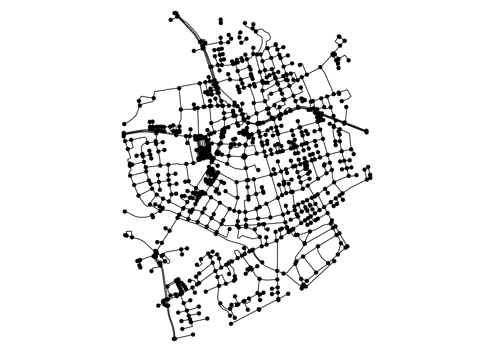
If the features are points, they are considered to be the nodes of the network, and they are connected by edges according to a given adjacency matrix. The adjacency matrix can also be created internally according to a specified method.
net = as_sfnetwork(mozart, connections = "gabriel", directed = FALSE)
net#> # A sfnetwork: 17 nodes and 25 edges
#> #
#> # A bipartite simple graph with 1 component and spatially explicit edges
#> #
#> # Dimension: XY
#> # Bounding box: xmin: 4548664 ymin: 2747309 xmax: 4549589 ymax: 2748537
#> # Projected CRS: ETRS89-extended / LAEA Europe
#> #
#> # Node data: 17 × 4 (active)
#> name type website geometry
#> <chr> <chr> <chr> <POINT [m]>
#> 1 Mozartkino cinema https://www.mozartki… (4549504 2747309)
#> 2 Haus für Mozart theatre NA (4549003 2747376)
#> 3 Mozartsteg/Rudolfskai bus_stop NA (4549589 2747507)
#> 4 Mozart Denkmal artwork NA (4549387 2747514)
#> 5 Mozartsteg/Rudolfskai bus_stop NA (4549491 2747551)
#> 6 Mozartsteg bridge NA (4549473 2747624)
#> # ℹ 11 more rows
#> #
#> # Edge data: 25 × 3
#> from to geometry
#> <int> <int> <LINESTRING [m]>
#> 1 1 3 (4549504 2747309, 4549589 2747507)
#> 2 1 4 (4549504 2747309, 4549387 2747514)
#> 3 2 4 (4549003 2747376, 4549387 2747514)
#> # ℹ 22 more rows
plot(net)
Analyzing spatial networks
Thanks to the design of both sf and tidygraph, spatial network analysis with sfnetworks can be fitted seamlessly into tidy data analysis workflows using the tidyverse family of packages. Since a sfnetwork object can be treated as a collection of two tables, rather than one, you just need to specify to which of them you want to apply a function. For this, tidygraph invented the activate() verb, allowing to set either the nodes or the edges as the target of analysis. Having done that, you can apply your favorite tidyverse verb just as you’re used to. As you can see below the activation of a network element also changes the order in which they are printed.
net |>
activate(nodes) |>
mutate(label = letters[1:n()]) |>
select(name, label) |>
activate(edges) |>
filter(sample(c(TRUE, FALSE), n(), replace = TRUE))#> # A sfnetwork: 17 nodes and 13 edges
#> #
#> # An unrooted forest with 4 trees and spatially explicit edges
#> #
#> # Dimension: XY
#> # Bounding box: xmin: 4548664 ymin: 2747309 xmax: 4549589 ymax: 2748537
#> # Projected CRS: ETRS89-extended / LAEA Europe
#> #
#> # Edge data: 13 × 3 (active)
#> from to geometry
#> <int> <int> <LINESTRING [m]>
#> 1 1 4 (4549504 2747309, 4549387 2747514)
#> 2 3 5 (4549589 2747507, 4549491 2747551)
#> 3 4 5 (4549387 2747514, 4549491 2747551)
#> 4 4 9 (4549387 2747514, 4549120 2747654)
#> 5 6 10 (4549473 2747624, 4549418 2747723)
#> 6 7 9 (4549064 2747619, 4549120 2747654)
#> # ℹ 7 more rows
#> #
#> # Node data: 17 × 3
#> name label geometry
#> <chr> <chr> <POINT [m]>
#> 1 Mozartkino a (4549504 2747309)
#> 2 Haus für Mozart b (4549003 2747376)
#> 3 Mozartsteg/Rudolfskai c (4549589 2747507)
#> # ℹ 14 more rowsObviously a network is more than just a list of two distinct elements. Nodes and edges are related to each other. Therefore, some operations that are applied to the nodes may also affect the edges, and vice versa. A good example of this is filtering. Whenever nodes are removed from the network, the edges terminating at those nodes will be removed too. This behavior is not symmetric: when removing edges, the endpoints of those edges remain, even if they are not an endpoint of any other edge. This is because by definition edges can never exist without nodes on their ends, while nodes can peacefully exist in isolation.
# Filtering nodes also reduces the number of edges.
net |>
activate(nodes) |>
filter(type == "artwork")#> # A sfnetwork: 3 nodes and 0 edges
#> #
#> # An unrooted forest with 3 trees and spatially implicit edges
#> #
#> # Dimension: XY
#> # Bounding box: xmin: 4548664 ymin: 2747514 xmax: 4549387 ymax: 2747868
#> # Projected CRS: ETRS89-extended / LAEA Europe
#> #
#> # Node data: 3 × 4 (active)
#> name type website geometry
#> <chr> <chr> <chr> <POINT [m]>
#> 1 Mozart Denkmal artwork NA (4549387 2747514)
#> 2 Spirit of Mozart artwork https://salzburgfoundat… (4549119 2747790)
#> 3 Mozart-Eine Hommage artwork https://salzburgfoundat… (4548664 2747868)
#> #
#> # Edge data: 0 × 3
#> # ℹ 3 variables: from <int>, to <int>, geometry <GEOMETRY [m]>Another consequence of working with relational data is that not all operations that are defined for single tables are applicable to networks. For example, the common groupby-apply-combine workflows are not supported, since they would break the relational structure. In these cases, however, you can always extract the active element from the network either as a sf object or a tibble, and proceed your analysis on a single table.
#> Simple feature collection with 13 features and 2 fields
#> Geometry type: GEOMETRY
#> Dimension: XY
#> Bounding box: xmin: 4548664 ymin: 2747309 xmax: 4549589 ymax: 2748537
#> Projected CRS: ETRS89-extended / LAEA Europe
#> # A tibble: 13 × 3
#> type n geometry
#> <chr> <int> <GEOMETRY [m]>
#> 1 apartments 1 POINT (4549073 2747916)
#> 2 artwork 3 MULTIPOINT ((4548664 2747868), (4549119 2747790), (45493…
#> 3 bridge 1 POINT (4549473 2747624)
#> 4 bus_stop 3 MULTIPOINT ((4549418 2747723), (4549491 2747551), (45495…
#> 5 cafe 1 POINT (4548994 2747632)
#> 6 cinema 1 POINT (4549504 2747309)
#> 7 concert_hall 1 POINT (4548897 2748037)
#> 8 confectionery 1 POINT (4549120 2747654)
#> 9 dormitory 1 POINT (4548984 2748537)
#> 10 hotel 1 POINT (4549378 2748391)
#> 11 museum 1 POINT (4549064 2747619)
#> 12 theatre 1 POINT (4549003 2747376)
#> 13 university 1 POINT (4549059 2748042)Network analysis with tidygraph
To allow performing common network analysis tasks, sfnetworks builds upon tidygraph. Since sfnetwork objects inherit the tbl_graph class, all analytical functions from tidygraph can be directly used. There are a lot of such functions available, most of which are tidy wrappers around functions from the igraph library. For a complete overview, check the tidygraph documentation.
It is important to note that in the case of spatial networks it often makes most sense to use geographic length as edge weight. Since tidygraph does not know about space, it will never set this automatically, so you will have to explicitly specify it every time you call a function that can consider edge weights. Read more about specifying edge weights in the vignette Routing on spatial networks.
net = net |>
activate(edges) |>
mutate(length = edge_length())
net#> # A sfnetwork: 17 nodes and 25 edges
#> #
#> # A bipartite simple graph with 1 component and spatially explicit edges
#> #
#> # Dimension: XY
#> # Bounding box: xmin: 4548664 ymin: 2747309 xmax: 4549589 ymax: 2748537
#> # Projected CRS: ETRS89-extended / LAEA Europe
#> #
#> # Edge data: 25 × 4 (active)
#> from to geometry length
#> <int> <int> <LINESTRING [m]> [m]
#> 1 1 3 (4549504 2747309, 4549589 2747507) 216.
#> 2 1 4 (4549504 2747309, 4549387 2747514) 236.
#> 3 2 4 (4549003 2747376, 4549387 2747514) 409.
#> 4 2 7 (4549003 2747376, 4549064 2747619) 250.
#> 5 2 8 (4549003 2747376, 4548994 2747632) 256.
#> 6 3 5 (4549589 2747507, 4549491 2747551) 107.
#> # ℹ 19 more rows
#> #
#> # Node data: 17 × 4
#> name type website geometry
#> <chr> <chr> <chr> <POINT [m]>
#> 1 Mozartkino cinema https://www.mozartki… (4549504 2747309)
#> 2 Haus für Mozart theatre NA (4549003 2747376)
#> 3 Mozartsteg/Rudolfskai bus_stop NA (4549589 2747507)
#> # ℹ 14 more rowsMeasures
A large set of functions in tidygraph is dedicated to the computation of quantitative measures for nodes, edges, or the network as a whole. Most known are centrality measures, which define the importance of a node in the network. The names of all implemented centrality measure functions are formatted as centrality_*. Other implemented measure functions have names formatted as node_* (for node measures) or edge_* (for edge measures) or graph_* (for network measures). A special group of measure functions are the logical measures, which return either TRUE or FALSE, indicating if the node, edge or network is of a specified type.
None of these functions are meant to be called directly, but used inside tidyverse-verbs such as dplyr::mutate() or dplyr::filter(), where the analyzed network is know and thus not needed as an input to the function. tidygraph::with_graph() can be used to evaluate a measure in the context of a specific network, but outside the tidyverse framework.
new_net = net |>
activate(edges) |>
filter(!edge_is_incident(13)) |>
activate(nodes) |>
mutate(bc = centrality_betweenness(weights = length))
new_net#> # A sfnetwork: 17 nodes and 23 edges
#> #
#> # A bipartite simple graph with 2 components and spatially explicit edges
#> #
#> # Dimension: XY
#> # Bounding box: xmin: 4548664 ymin: 2747309 xmax: 4549589 ymax: 2748537
#> # Projected CRS: ETRS89-extended / LAEA Europe
#> #
#> # Node data: 17 × 5 (active)
#> name type website geometry bc
#> <chr> <chr> <chr> <POINT [m]> <dbl>
#> 1 Mozartkino cinema https://www.mo… (4549504 2747309) 0
#> 2 Haus für Mozart theatre NA (4549003 2747376) 0
#> 3 Mozartsteg/Rudolfskai bus_stop NA (4549589 2747507) 5
#> 4 Mozart Denkmal artwork NA (4549387 2747514) 21
#> 5 Mozartsteg/Rudolfskai bus_stop NA (4549491 2747551) 22
#> 6 Mozartsteg bridge NA (4549473 2747624) 16
#> # ℹ 11 more rows
#> #
#> # Edge data: 23 × 4
#> from to geometry length
#> <int> <int> <LINESTRING [m]> [m]
#> 1 1 3 (4549504 2747309, 4549589 2747507) 216.
#> 2 1 4 (4549504 2747309, 4549387 2747514) 236.
#> 3 2 4 (4549003 2747376, 4549387 2747514) 409.
#> # ℹ 20 more rows
ggraph(new_net, "sf") +
geom_edge_sf() +
geom_node_sf(aes(size = bc)) +
theme_void()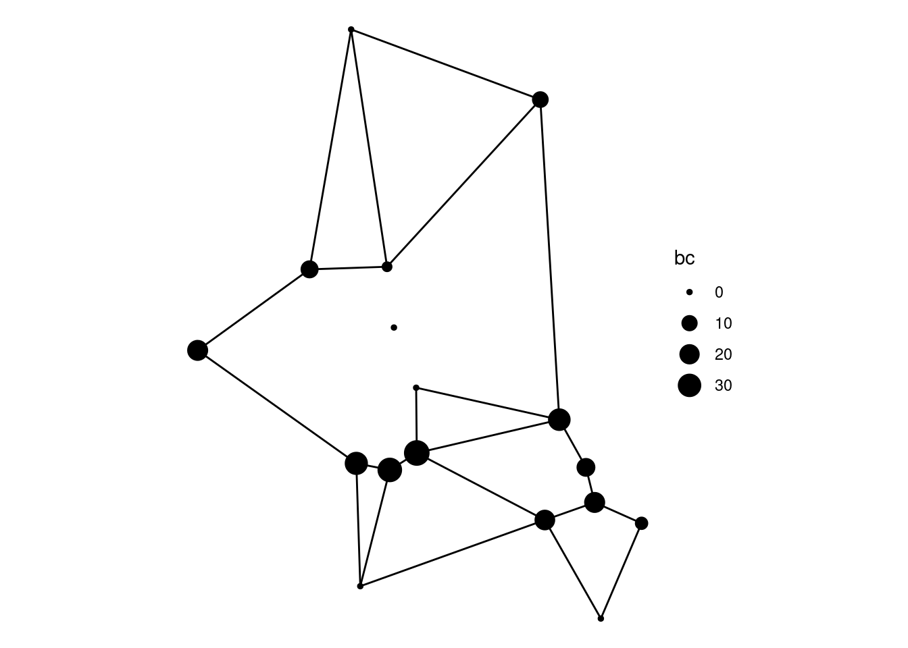
with_graph(net, centrality_degree()) |> setNames(NULL)
#> [1] 2 3 2 4 3 2 3 3 4 4 3 2 2 4 3 3 3Community detection
Another set of functions in tidygraph deals with community detection in networks. These functions group nodes or edges based on a clustering algorithm. Their names are all formatted as group_*, and they will always return a vector of group indices, one for each feature. Most of the implemented algorithms will try to create groups of nodes such that the number of edges within groups is relatively high compared to the number of edges between groups, as in the example below. Do note that these algorithms are generally not designed to account for spatial factors, and they may have limited use when working with spatial networks.
new_net = net |>
activate(nodes) |>
mutate(group = group_optimal())
ggraph(new_net, "sf") +
geom_edge_sf() +
geom_node_sf(aes(color = as.factor(group)), size = 4) +
scale_colour_discrete("group") +
theme_void()
Morphers
Finally, tidygraph has introduced a new set of network analysis functions which they call morphers. Morphers change the structure of the input graph, for example by subsetting or splitting it, by combining multiple features into one, or by converting nodes to edges and vice versa. If this different struture is only needed for a few computations, it can be set temporarily by providing the morphers to subsequently the tidygraph::morph() and tidygraph::unmorph() verbs. If the different structure is meant to last, the morpher can be provided to the tidygraph::convert() verb instead. An example is to convert a network into its minimum spanning tree, which contains only the minimum set of edges need such that all nodes are still connected like before.
new_net = net |>
convert(to_minimum_spanning_tree, weights = length)
ggraph(new_net, "sf") +
geom_edge_sf() +
geom_node_sf(size = 4) +
theme_void()
Spatial analysis with sf
By writing methods for many spatial analytical functions from the sf package, sfnetworks allows these functions to be called directly on sfnetwork objects, without the need for conversion. See here for an overview of all sf functions that have a method for sfnetwork objects. For a complete overview of the functionalities of sf, check the sf documentation.
Coordinate reference systems
One of the many tasks that sf covers is the specification of coordinate reference systems, CRS for short, and the transformation of spatial coordinates between such systems. In a sfnetwork object the nodes and edges always have the same CRS, so it does not matter which of the elements is active when you retrieve the CRS, or when you transform coordinates into a different CRS.
st_crs(net)$epsg
#> [1] 3035
st_transform(net, 4326)#> # A sfnetwork: 17 nodes and 25 edges
#> #
#> # A bipartite simple graph with 1 component and spatially explicit edges
#> #
#> # Dimension: XY
#> # Bounding box: xmin: 13.03835 ymin: 47.79698 xmax: 13.05049 ymax: 47.80822
#> # Geodetic CRS: WGS 84
#> #
#> # Edge data: 25 × 4 (active)
#> from to geometry length
#> <int> <int> <LINESTRING [°]> [m]
#> 1 1 3 (13.04925 47.79698, 13.05049 47.79874) 216.
#> 2 1 4 (13.04925 47.79698, 13.04781 47.79887) 236.
#> 3 2 4 (13.0426 47.79778, 13.04781 47.79887) 409.
#> 4 2 7 (13.0426 47.79778, 13.04355 47.79993) 250.
#> 5 2 8 (13.0426 47.79778, 13.04263 47.80008) 256.
#> 6 3 5 (13.05049 47.79874, 13.04921 47.79917) 107.
#> # ℹ 19 more rows
#> #
#> # Node data: 17 × 4
#> name type website geometry
#> <chr> <chr> <chr> <POINT [°]>
#> 1 Mozartkino cinema https://www.mozartki… (13.04925 47.79698)
#> 2 Haus für Mozart theatre NA (13.0426 47.79778)
#> 3 Mozartsteg/Rudolfskai bus_stop NA (13.05049 47.79874)
#> # ℹ 14 more rowsSpatial predicates
In sf there are also multiple functions that implement the evaluation of a spatial predicate. A spatial predicate describes a spatial relation between two geometries. For example, a point A may be located within a polygon B. In the example below we show how to evaluate for each node in a spatial network if it is located within one of two given polygons.
ggraph(net, "sf") +
geom_sf(data = polys, linewidth = 1, color = "orange") +
geom_edge_sf() +
geom_node_sf(size = 4) +
theme_void()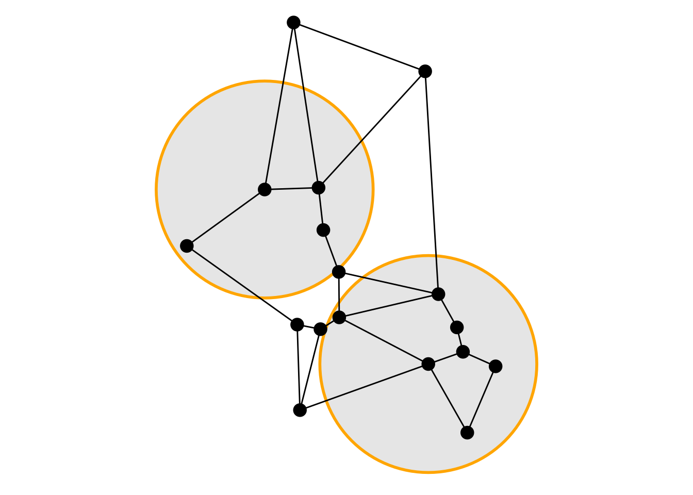
Spatial joins and filters
By using spatial predicates, sf offers the ability to perform spatial joins and spatial filters. Spatial joins join information from a spatial feature to all features it has the specified spatial relation with. Spatial filters keep those features that have the specified spatial relation, and removes those that have not. For more details on spatial joins and filters for spatial networks, see the vignette Spatial joins and filters.
ggraph(new_net, "sf") +
geom_sf(data = polys, linewidth = 1, color = "orange") +
geom_edge_sf() +
geom_node_sf(aes(color = as.factor(label)), size = 4) +
scale_colour_discrete("label") +
theme_void()
ggraph(new_net, "sf") +
geom_sf(data = polys, linewidth = 1, color = "orange") +
geom_edge_sf() +
geom_node_sf(size = 4) +
theme_void()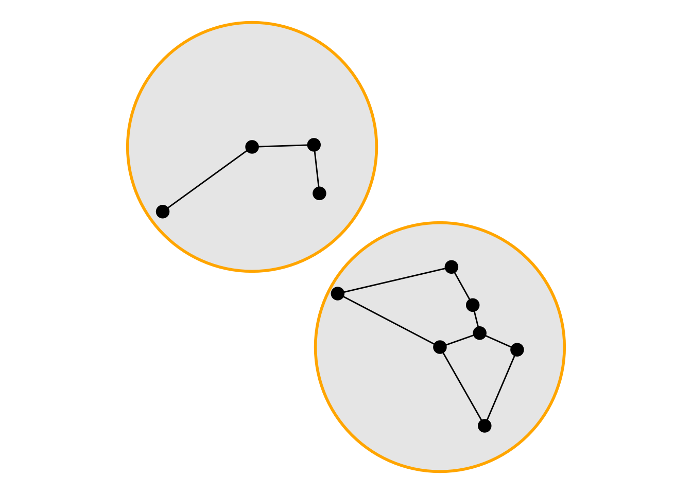
Geometric unary operations
Finally, sf contains a group of functions known as geometric unary operations. These functions change the structure of individual geometries. Their usage in the context of spatial networks is limited, since many of them would break the network structure in which endpoints of edges are spatially equal to their respective nodes. Hence, only those geometric unary operations that do not change the type, shape, or position of the geometries have a method for sfnetwork objects. These include sf::st_reverse() to reverse edge geometries, and sf::st_segmentize() to add interior points to edge geometries. However, just as with unsupported tidyverse-verbs, you can still apply unsupported geometric unary operations by first extracting the active element as a sf object, and proceed your analysis on a single table.
#> Simple feature collection with 17 features and 3 fields
#> Attribute-geometry relationships: constant (3)
#> Geometry type: POLYGON
#> Dimension: XY
#> Bounding box: xmin: 4548414 ymin: 2747059 xmax: 4549839 ymax: 2748787
#> Projected CRS: ETRS89-extended / LAEA Europe
#> # A tibble: 17 × 4
#> name type website geometry
#> * <chr> <chr> <chr> <POLYGON [m]>
#> 1 Mozartkino cinema https://www.… ((4549754 2747309, 45497…
#> 2 Haus für Mozart theatre NA ((4549253 2747376, 45492…
#> 3 Mozartsteg/Rudolfskai bus_stop NA ((4549839 2747507, 45498…
#> 4 Mozart Denkmal artwork NA ((4549637 2747514, 45496…
#> 5 Mozartsteg/Rudolfskai bus_stop NA ((4549741 2747551, 45497…
#> 6 Mozartsteg bridge NA ((4549723 2747624, 45497…
#> 7 Mozarts Geburtshaus museum http://www.m… ((4549314 2747619, 45493…
#> 8 Café Mozart cafe https://www.… ((4549244 2747632, 45492…
#> 9 Mozartkugel confectionery NA ((4549370 2747654, 45493…
#> 10 Mozartsteg/Imbergstraße bus_stop NA ((4549668 2747723, 45496…
#> 11 Spirit of Mozart artwork https://salz… ((4549369 2747790, 45493…
#> 12 Mozart-Eine Hommage artwork https://salz… ((4548914 2747868, 45489…
#> 13 Mozarts Wohnhaus apartments NA ((4549323 2747916, 45493…
#> 14 Universität Mozarteum university NA ((4549309 2748042, 45493…
#> 15 Stiftung Mozarteum concert_hall NA ((4549147 2748037, 45491…
#> 16 Hotel Mozart hotel http://www.h… ((4549628 2748391, 45496…
#> 17 Mozart Studentenheim dormitory NA ((4549234 2748537, 45492…Spatial network specific additions
As mentioned, sfnetworks extends the functionalities of tidygraph and sf by offering functions that are specific for spatial network analysis, as well as functions that allow for a smoother integration of sf into the design of tidygraph workflows. In contradiction to tidygraph, all functions in sfnetworks that consider edge weights will always use geographic edge length as the default weight.
Relating networks and spatial simple features
The first family of functions in sfnetworks have names formatted as st_network_*, adopting the naming conventions of sf. All of these functions take a spatial network as first input an implement an analysis task that involves both the network and a set of regular spatial simple features (points, lines, polygons). The returned object can either be a set of spatial simple features computed from that network, the network itself with other spatial features merged into it, or another object (e.g., a matrix) that is the result of a computation relating the network to the spatial features. This covers a large range of use-cases. Examples include drawing isochrone or isodistance polygons around nodes, finding geographic shortest paths between pairs of nodes, computing cost matrices of travel between nodes, extracting the faces of the network, and adding external point data as new nodes to the network. In the other vignettes you will find more details on all of these functions.
There are also functions in sfnetworks that start only with st_*, and end with *_network. In contradiction to the st_network_* functions, these functions take a set of spatial features as first input, and the network as an additional argument. An example is st_project_on_network, that projects points onto the network.
# Find shortest path between node 1 and node 17.
path = st_network_paths(net, 1, 17)
# Draw an isodistance polygon with 500m threshold around node 13.
iso = st_network_iso(net, 13, 500)
# Extract the faces of the network.
faces = st_network_faces(net)
# Blend external points as new nodes into the network.
feats = st_sample(st_bbox(mozart), 10)
blend = st_network_blend(net, feats)
ggraph(net, "sf") +
geom_edge_sf() +
geom_sf(data = path, color = "orange", linewidth = 2) +
geom_node_sf(size = 4) +
geom_sf(data = st_geometry(net, "nodes")[c(1, 17)], size = 6) +
theme_void()
ggraph(net, "sf") +
geom_sf(data = iso, fill = "orange", alpha = 0.7) +
geom_edge_sf() +
geom_node_sf(size = 4) +
geom_sf(data = st_geometry(net, "nodes")[13], size = 6) +
theme_void()
faces_sf = st_sf(id = c(1:length(faces)), geometry = faces)
ggraph(net, "sf") +
geom_sf(data = faces_sf, aes(fill = as.factor(id)), show.legend = FALSE) +
geom_edge_sf() +
geom_node_sf(size = 4) +
theme_void()
ggraph(blend, "sf") +
geom_edge_sf() +
geom_node_sf(size = 4) +
geom_sf(data = feats, color = "orange", size = 4) +
geom_sf(
data = st_nearest_points(feats, st_combine(st_geometry(blend, "nodes"))),
color = "grey",
linetype = 2
) +
theme_void()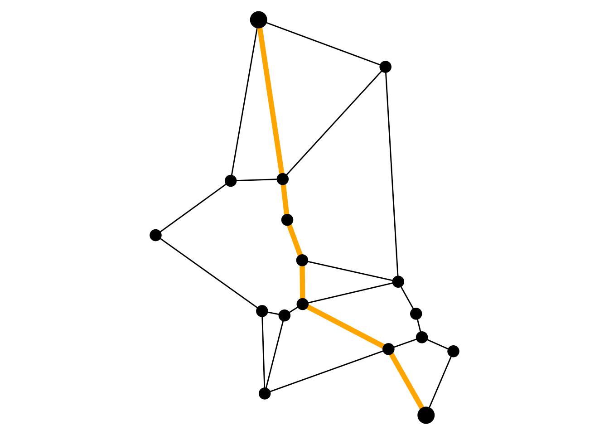
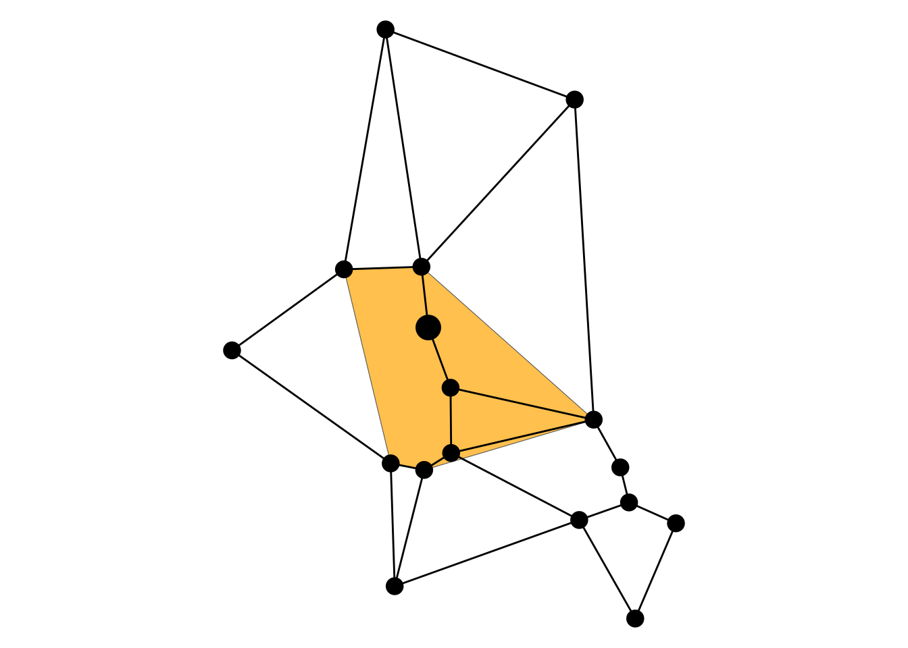

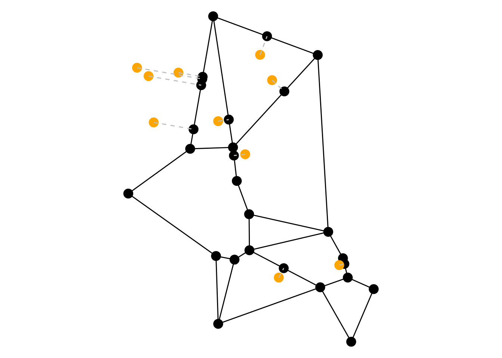
Spatial measures
As an extension to the measure functions of tidygraph, there are several spatial measure functions for nodes and edges to be found in sfnetworks. Just as in tidygraph, these functions are named in the style of node_* or edge_*, or when it is a centrality measure, centrality_*. Edge measures that can be computed include for example the geographic length of an edge, its azimuth, or its circuity (i.e. the ratio between its geographic length and the shortest euclidean distance from source to target node). For nodes, it is for example possible to compute the straightness centrality (i.e. the average ratio of euclidean distance and network distance between that node and all other nodes in the network).
To better integrate spatial predicate functions of sf into the design of tidygraph, all applicable predicates are also implemented as node and edge measure function. These functions will return TRUE if the node or edge has the specified spatial relation with at least one of the given spatial features, and FALSE otherwise. This makes it easy to use the predicates directly inside functions such as dplyr::filter() and dplyr::mutate().
new_net = net |>
activate(edges) |>
filter(edge_intersects(polys)) |>
mutate(circuity = edge_circuity()) |>
activate(nodes) |>
mutate(
sc = centrality_straightness(),
in_poly = node_is_within(polys)
)
new_net#> # A sfnetwork: 17 nodes and 21 edges
#> #
#> # A bipartite simple graph with 1 component and spatially explicit edges
#> #
#> # Dimension: XY
#> # Bounding box: xmin: 4548664 ymin: 2747309 xmax: 4549589 ymax: 2748537
#> # Projected CRS: ETRS89-extended / LAEA Europe
#> #
#> # Node data: 17 × 6 (active)
#> name type website geometry sc in_poly
#> <chr> <chr> <chr> <POINT [m]> <dbl> <lgl>
#> 1 Mozartkino cinema https:… (4549504 2747309) 0.847 TRUE
#> 2 Haus für Mozart theatre NA (4549003 2747376) 0.648 FALSE
#> 3 Mozartsteg/Rudolfskai bus_stop NA (4549589 2747507) 0.878 TRUE
#> 4 Mozart Denkmal artwork NA (4549387 2747514) 0.850 TRUE
#> 5 Mozartsteg/Rudolfskai bus_stop NA (4549491 2747551) 0.874 TRUE
#> 6 Mozartsteg bridge NA (4549473 2747624) 0.843 TRUE
#> # ℹ 11 more rows
#> #
#> # Edge data: 21 × 5
#> from to geometry length circuity
#> <int> <int> <LINESTRING [m]> [m] <dbl>
#> 1 1 3 (4549504 2747309, 4549589 2747507) 216. 1
#> 2 1 4 (4549504 2747309, 4549387 2747514) 236. 1
#> 3 2 4 (4549003 2747376, 4549387 2747514) 409. 1
#> # ℹ 18 more rowsSpatial clustering
As an extension to the community detection functions in tidygraph, sfnetworks contains the group_spatial_dbscan() function to find spatial clusters of nodes. The idea is to offer multiple spatial clustering algorithms to choose from, but currently the only one implemented is the DBSCAN algorithm (which does require the dbscan package to be installed). The algorithm is executed on the network distance matrix of the nodes, and not on the euclidean distance matrix.
new_net = net |>
activate(nodes) |>
mutate(group = group_spatial_dbscan(300))
ggraph(new_net, "sf") +
geom_edge_sf() +
geom_node_sf(aes(color = as.factor(group)), size = 4) +
scale_colour_discrete("group") +
theme_void()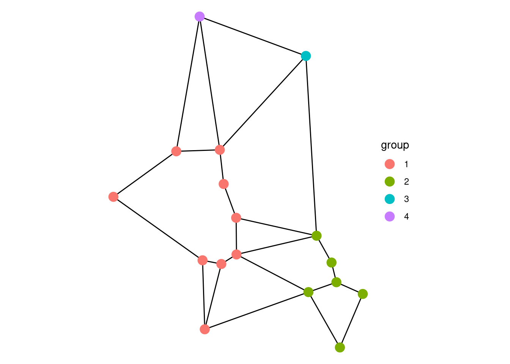
Spatial morphers
As an extension to the morpher functions in tidygraph, there are many different spatial morpher functions implemented in sfnetworks. Just as in tidygraph, these function change the structure of the input network, for example by subsetting or splitting it, by combining multiple features into one, or by splitting single features. Common examples include subdividing the network at interior points in edge geometries, smoothing pseudo nodes that have a degree of 2, and contracting multiple nodes into one while preserving the network connectivity. In the other vignettes you will find more details on all of these functions. Many morphers are used for network cleaning operations, which are described in detail in the vignette Cleaning spatial networks.
# Smooth nodes of degree 2.
smooth = convert(net, to_spatial_smooth)
# Subdivide edges at each interior point in the smoothed network.
# In this case this is the opposite of smoothing, it adds back the degree 2 nodes.
division = convert(smooth, to_spatial_subdivision, all = TRUE)
# Contract nodes that are in the same spatial cluster.
contraction = net |>
activate(nodes) |>
mutate(group = group_spatial_dbscan(300)) |>
convert(to_spatial_contracted, group)
# Subset the graph to only those edges in a shortest path.
path = convert(net, to_spatial_shortest_paths, 1, 17)
ggraph(smooth, "sf") +
geom_edge_sf() +
geom_node_sf(size = 4) +
theme_void()
ggraph(division, "sf") +
geom_edge_sf() +
geom_node_sf(size = 4) +
theme_void()
ggraph(contraction, "sf") +
geom_edge_sf() +
geom_node_sf(size = 4) +
theme_void()
ggraph(path, "sf") +
geom_edge_sf() +
geom_node_sf(size = 4) +
theme_void()


Utilities
Finally, sfnetworks exports all kind of utility functions that should make working with spatial networks less cumbersome. An example is finding the nearest node and nearest edge to a given spatial feature. For an overview of all exported functions of the package, see the function reference.
p = st_centroid(st_combine(mozart))
nn = nearest_nodes(net, p)
nn#> Simple feature collection with 1 feature and 3 fields
#> Attribute-geometry relationships: constant (3)
#> Geometry type: POINT
#> Dimension: XY
#> Bounding box: xmin: 4549119 ymin: 2747790 xmax: 4549119 ymax: 2747790
#> Projected CRS: ETRS89-extended / LAEA Europe
#> # A tibble: 1 × 4
#> name type website geometry
#> <chr> <chr> <chr> <POINT [m]>
#> 1 Spirit of Mozart artwork https://salzburgfoundation… (4549119 2747790)
ne = nearest_edges(net, p)
ne#> Simple feature collection with 1 feature and 3 fields
#> Geometry type: LINESTRING
#> Dimension: XY
#> Bounding box: xmin: 4549119 ymin: 2747723 xmax: 4549418 ymax: 2747790
#> Projected CRS: ETRS89-extended / LAEA Europe
#> # A tibble: 1 × 4
#> from to geometry length
#> <int> <int> <LINESTRING [m]> [m]
#> 1 10 11 (4549418 2747723, 4549119 2747790) 306.
ggraph(net, "sf") +
geom_sf(data = p, size = 6, pch = 8) +
geom_edge_sf(color = "grey") +
geom_node_sf(color = "grey", size = 4) +
geom_sf(data = nn, color = "orange", size = 6) +
theme_void()
ggraph(net, "sf") +
geom_sf(data = p, size = 6, pch = 8) +
geom_edge_sf(color = "grey") +
geom_sf(data = ne, color = "orange", linewidth = 2) +
geom_node_sf(color = "grey", size = 4) +
theme_void()
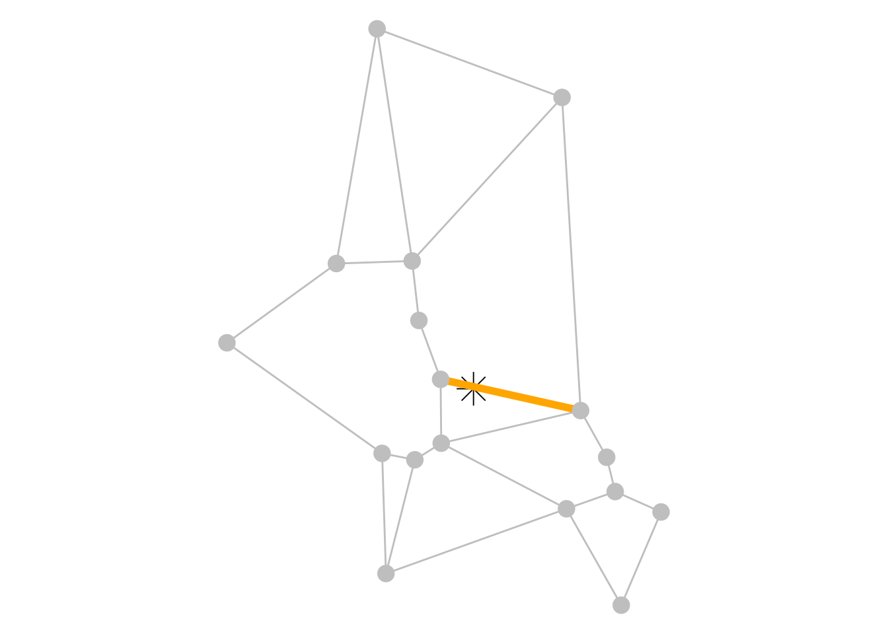
Non-tidyverse workflows
Also if you are not a fan of the tidyverse style of data analysis, sfnetworks can be for you. Since sfnetwork objects inherit the igraph class, you can apply all functions from the large igraph package to it. This means, for example, that instead of using dplyr::mutate() and dplyr::filter(), you could proceed as follows (note that in igraph, the term vertex is used instead of node).
# Mutate.
vertex_attr(net, "label") = letters[1:vcount(net)]
# Filter.
drop = which(!sample(c(TRUE, FALSE), ecount(net), replace = TRUE))
new_net = delete_edges(net, drop)
new_net
#> IGRAPH f481e4e UN-B 17 12 --
#> + attr: name (v/c), type (v/c), website (v/c), geometry (v/x), label
#> | (v/c), geometry (e/x), length (e/n)
#> + edges from f481e4e (vertex names):
#> [1] Mozartkino --Mozartsteg/Rudolfskai
#> [2] Haus für Mozart --Café Mozart
#> [3] Mozart Denkmal --Mozartsteg/Rudolfskai
#> [4] Mozarts Geburtshaus --Café Mozart
#> [5] Mozartkugel --Mozartsteg/Imbergstraße
#> [6] Mozartkugel --Spirit of Mozart
#> [7] Mozartsteg/Imbergstraße--Spirit of Mozart
#> + ... omitted several edgesAs you can see, this returns a igraph object instead of a sfnetwork object. To preserve the class, you can use the wrap_igraph() function of sfnetworks for each igraph function that accepts a network as first input and returns another network. This function will check if the returned network is still spatial.
wrap_igraph(net, delete_edges, drop)#> # A sfnetwork: 17 nodes and 12 edges
#> #
#> # A bipartite simple graph with 6 components and spatially explicit edges
#> #
#> # Dimension: XY
#> # Bounding box: xmin: 4548664 ymin: 2747309 xmax: 4549589 ymax: 2748537
#> # Projected CRS: ETRS89-extended / LAEA Europe
#> #
#> # Edge data: 12 × 4 (active)
#> from to geometry length
#> <int> <int> <LINESTRING [m]> [m]
#> 1 1 3 (4549504 2747309, 4549589 2747507) 216.
#> 2 2 8 (4549003 2747376, 4548994 2747632) 256.
#> 3 4 5 (4549387 2747514, 4549491 2747551) 110.
#> 4 7 8 (4549064 2747619, 4548994 2747632) 71.1
#> 5 9 10 (4549120 2747654, 4549418 2747723) 305.
#> 6 9 11 (4549120 2747654, 4549119 2747790) 136.
#> # ℹ 6 more rows
#> #
#> # Node data: 17 × 5
#> name type website geometry label
#> <chr> <chr> <chr> <POINT [m]> <chr>
#> 1 Mozartkino cinema https://www.mo… (4549504 2747309) a
#> 2 Haus für Mozart theatre NA (4549003 2747376) b
#> 3 Mozartsteg/Rudolfskai bus_stop NA (4549589 2747507) c
#> # ℹ 14 more rows
mst = wrap_igraph(net, mst, weights = edge_attr(net, "length"))
ggraph(mst, "sf") +
geom_edge_sf() +
geom_node_sf(size = 4) +
theme_void()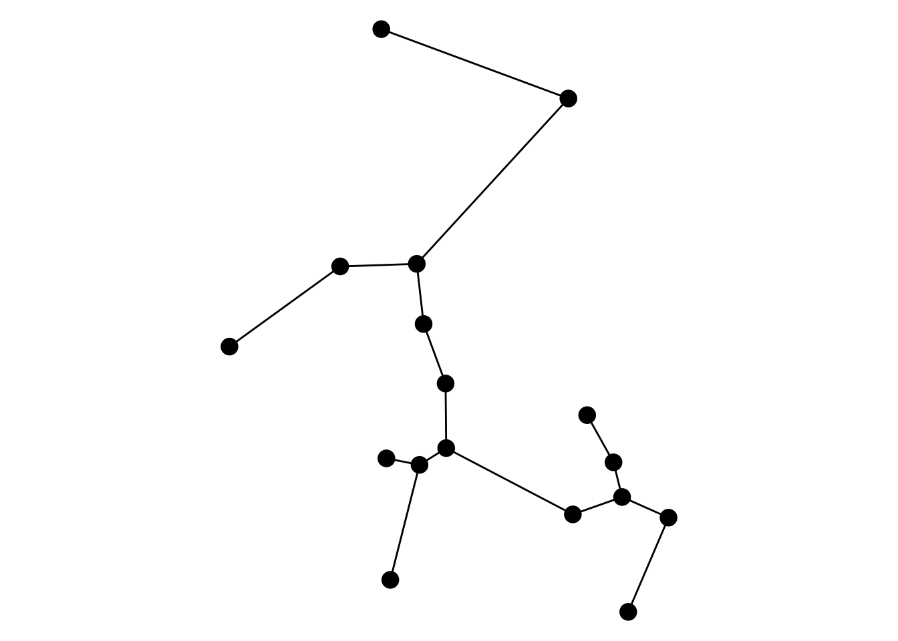
All spatial measure functions can be evaluated outside the tidygraph framework using with_graph(), which works similar to base R’s with() function.
with_graph(net, edge_circuity())
#> [1] 1 1 1 1 1 1 1 1 1 1 1 1 1 1 1 1 1 1 1 1 1 1 1 1 1All spatial morpher functions that implement a larger workflow have their internal workers exported, meaning they can be called directly outside the tidygraph::morph() and tidygraph::convert() verbs. All other morphers are easy to replicate using sf or other sfnetworks functions directly.
Visualizing spatial networks
To quickly visualize the network you can use the plot() method for sfnetwork objects. This will use sf to plot the geometries of nodes and edges in one view. Using the regular arguments of plot(), you can change the style of the plot as a whole. Arguments node_args and edge_args are added such that you can also provide style settings for nodes and edges separately, in list-format.
plot(mst)
plot(mst, col = "orange", pch = 8, cex = 4)
plot(
mst,
node_args = list(col = "orange", cex = 3),
edge_args = list(col = "grey", lwd = 2)
)


For more advanced visualizations, we recommend to use ggraph. This is an extension of {ggplot} for network data that works seamlessly with tbl_graph data structures. In fact, tidygraph was initially developed with the idea to provide a suitable data structure for ggraph visualizations. It now also has native support for sfnetworks with the sf layout and the ggraph::geom_node_sf() and ggraph::geom_edge_sf() geoms that are aware of the spatial nature of the data. Edges can also be plotted without their spatial embedding, using one of the many other geoms offerend by ggraph. To plot additional spatial layers that are not networks, you can simply use ggplot::geom_sf(). For more details, check the ggraph documentation.
ggraph(mst, "sf") +
geom_edge_sf() +
geom_node_sf() +
theme_void()
ggraph(mst, "sf") +
geom_edge_sf() +
geom_node_sf(aes(color = as.factor(type)), size = 4) +
scale_color_discrete("type") +
theme_void()
ggraph(mst, "sf") +
geom_edge_fan(aes(alpha = after_stat(index)), show.legend = FALSE) +
geom_node_sf(aes(size = centrality_degree()), color = "orange") +
theme_void()
ggraph(mst, "sf") +
geom_edge_sf(color = "grey") +
geom_node_sf(color = "orange", size = 4) +
geom_sf(
data = st_buffer(st_centroid(st_combine(mozart)), 300),
fill = "skyblue", alpha = 0.5, linewidth = 0.8
) +
theme_void()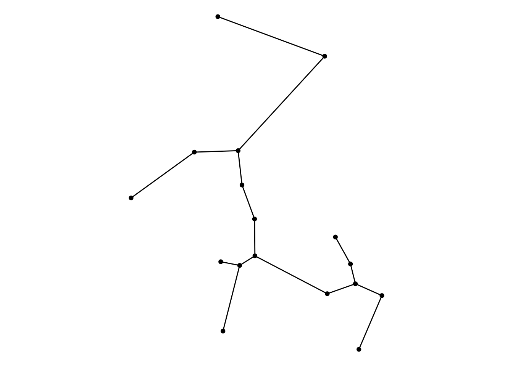
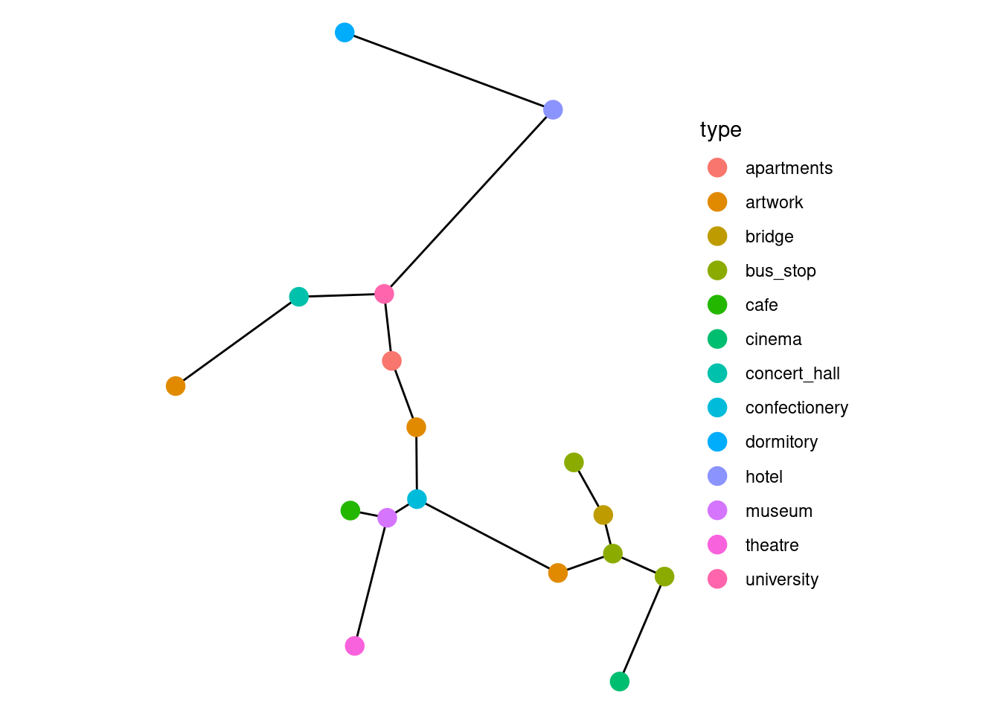
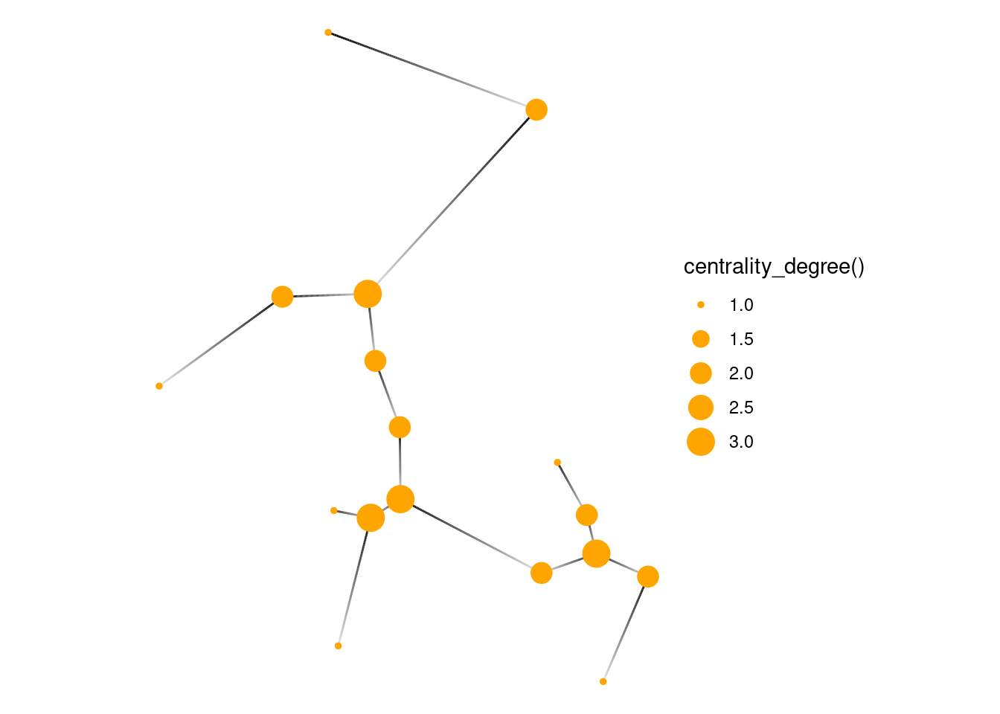

If you want to create Leaflet-based interactive maps, take a look at the packages mapview or tmap. These are well integrated with sf, so you can extract nodes and edges from the network, and plot them as two separate layers.
Learning more
This vignette provided an introduction to sfnetworks. The documentation contains several other vignettes that dive into more detail: